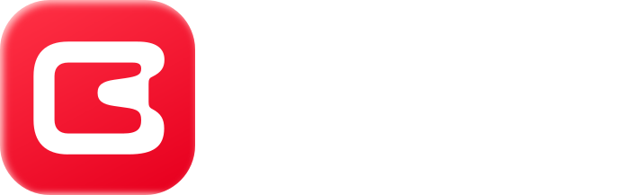

Немного космоса для вас
Поймать для вас
звезду
Ори · Ваш проводник к звёздам
Одна звезда. Одна мысль на день
Звезда поймана
Ори · Ваш проводник к звёздам
Ваша звезда на сегодня
Ори поймал для вас звезду
…
От Ори — для вас
Один день со звёздами
Следующую звезду Ори поймает завтра
Созвездие дня · Ковш
Покрутите Ори пальцем · мяч можно швырнуть жестом